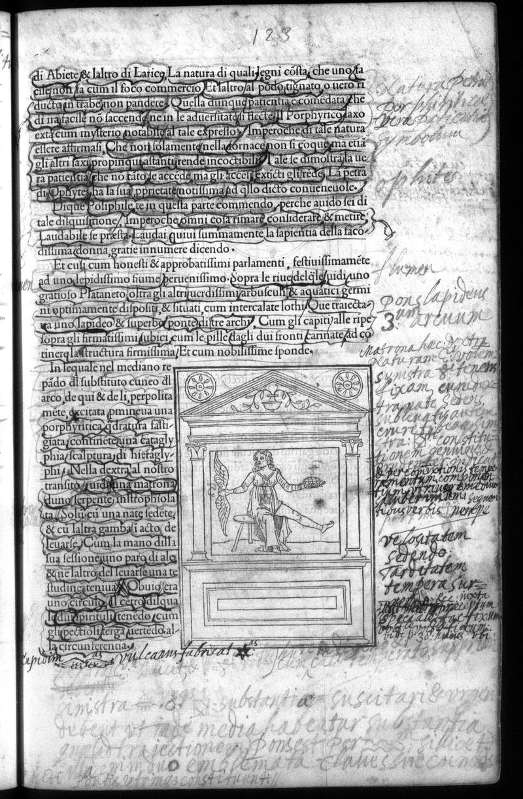

Signature h6r
Folio 62r, Quire h

British Library, London — C.60.o.12
Vision Reading (Phase 3 deep analysis)
Primary hand: Multiple · Hands: 3 · Type: woodcut_page · Sig: h2r
Woodcut: Seated figure at a desk within an architectural monument
Woodcut of a seated figure (philosopher or scholar?) at a desk or lectern, housed within a classical architectural frame with pediment, columns, and decorative elements. Printed text below discusses the scene. Annotations surround the image.
Condition: Good
Transcription Attempts
top · Italian/Latin · LOW
Abieco [...] et [...] altro [...] di [...] Langei [...] natura [...] qualch [...] segni [...] cosa [...] che [...] ungia [...]
'natura', 'segni' (signs). Reader tracking natural signs
right_margin · Latin · LOW
Laterobas [...] Dor [...] libidem [...] Corothea [...] lapideum [...] [...] Don [...] sapidorum [...] 3 [...] DSTUNCK [...]
'lapideum' (of stone). 'sapidorum' appears again (as on p.122)
right_margin_lower · Latin/Greek · MEDIUM
Polygdoen [...] Diacno [...] Herculem [...] temporis [...]
'Herculem' (Hercules), 'temporis' (of time). Reader identifying mythological references. Hercules at the crossroads is a standard Renaissance topos
bottom · Latin · LOW
[...] Phidra [...] Et [...] suptperia [...] inscriplione [...] falsar [...]
'inscriplione' (inscription), 'falsar' (of falsehood). Reader judging the inscription's authenticity
Scholarly Significance
Page 123 — immediately before the three doors scene. The 'Herculem' reference invokes the famous Choice of Hercules (Hercules at the crossroads), which is structurally parallel to Poliphilo's choice of three doors. This shows a reader making the classical mythological connection explicit. 'temporis' (time) and 'Herculem' together suggest the reader is reading the scene as a choice-of-life allegory in the Prodicus tradition.
Cross-references: Photo 137 (p.124, pre-three-doors), Photo 138 (p.125, three doors), Xenophon Memorabilia 2.1 (Choice of Hercules)
Vision reading (Claude Code, Phase 3)